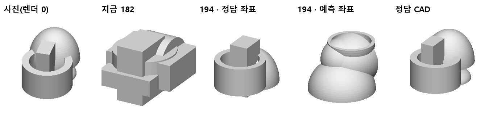

194 반쪽 182 — 사진 한 장의 반쪽 3면도로 182 를 다시 배운다 (11-14 · 모델194.py · 손으로 정리)
분석
한 줄로
물음: 사진 한 장에서 올린 반쪽 3면도로 182(3면도 → CAD)를 다시 배우면 CAD 가 나오나?
답: 조금 나온다. 정답 좌표로 그린 반쪽 그림에서 「같다」 0 % → 8.1 %, 모양 맞음 1 % → 13.1 % 로 판정선(5 % · 10 %)을 넘었다. 다만 20 바퀴 무게는 4.0 % 로 아슬아슬하고, 예측 좌표로 처음부터 끝까지 돌리면 2.0 % 다.
왜 이 판을 했나
tr193 의 천장 측정에서, 정답 좌표로 그린 반쪽 3면도(선 단위 F1 0.603)를 지금 182 에 넣었더니 「같다」 0 % 였다. 정답 3면도에서 선 조각 일부만 지워도 0 % 였다 — 182 는 완전한 그림만 읽는다. 사진 한 장에는 3면도 선의 절반 남짓만 보이니, 사용자 결정으로 182 를 반쪽 그림에서 다시 배웠다. 우리 목표는 그림 한 장 → 3면도 → CAD 코드.
바꾼 것 하나
182 의 입력. 렌더 → 모서리 → 정답 좌표로 올린 반쪽 3면도(보 · 숨). 182 무게에서 이어 30 바퀴 · 같은 망 · 손실 · 학습률 · 부품 12,267 개 × 렌더 두 장 · 시험 12000 번대는 학습에서 뺐다.
결과

| 시험 99 개 · 렌더 한 장 | 194(30 바퀴) | 지금 182 | 완전한 정답 3면도 → 182 | 판정선 | 넘었나 |
|---|---|---|---|---|---|
| 같다 3 % | 0.081 | 0.0 | 0.172 | ≥ 0.05 | 넘음 |
| 모양 맞음 | 0.131 | 0.01 | 0.333 | ≥ 0.10 | 넘음 |
| 처음부터 끝까지(예측 좌표) | 0.020 · 0.051 | 0.0 · 0.0 |
「같다」 = 덩어리 · 구멍 수가 같고 표면이 부품 크기의 3 % 안. 모양 맞음 = 같은 위상에 5 % 안.
왜 이렇게 나왔나
확인한 것
- 바퀴별 「같다」는 10 바퀴 0.061 · 20 바퀴 0.040 · 30 바퀴 0.081 — 99 개라 한두 개로 2 %p 흔들리고, 바퀴에 따라 오르는 흐름은 없다. 시험 손실은 6.25 → 11.25 로 올랐다(외움).
- 정답 칸에서 한 묶음만 194 예측으로 바꿔 지으면: 치수 0.162 · 자리 0.212 · 몸 있음과 종류 0.343 · 구멍 등 특징 0.343 · 축 0.485 · 필렛 1.0. 범인이 하나가 아니라 숫자 칸(치수 · 자리)이 가장 크게 깎는다. tr181 · 182(완전한 그림)와 같은 모양이다.
- 몸 있음 · 종류만 바꿔도 위상 맞음이 0.566 으로, 전부 바꿨을 때와 같다.
짐작 (아직 확인 안 함)
- 예측 좌표 그림은 경계가 뭉개져 숨은선 점선 부스러기가 많고, 194 는 그런 그림을 본 적이 없다.
한계
- 시험 99 개 · 시드 하나 · 판정 바퀴 하나(30). 20 바퀴였으면 불합격.
- 생성기(CAD) 렌더만 · 실제 사진은 안 씀.
배운 것과 다음
반쪽 그림을 배우자 CAD 짜임이 나오기 시작했지만, ⑥ 자체가 숫자(치수 · 자리)를 못 맞히는 게 더 큰 벽이다.
- ⑥ 의 숫자 칸: tr181 · 182 때부터 같은 벽 — 그림에서 치수를 재는 단계(기하로 잴 수 있는 것은 학습하지 않기)를 따로 둘지 본다.
- 194 를 예측 좌표 그림(193b 출력)으로도 배워 처음부터 끝까지 값을 올린다.